Dây
Dây là một vật dụng không thể thiếu trong cuộc sống của con người, nhất là khi chúng ta đang ở những vùng hoang dã
Dây dùng để cột trong việc dựng nhà, chòi trú ẩn... dùng để làm bẩy, dây câu, trói thú rừng, đan lưới, khâu vá áo quần, treo thức ăn, dụng cụ... chế tạo công cụ, vụ khí...
Trong trường hợp các bạn không có trong tay các loại dây công nghiệp, hư dây cước, sợi nylon, dây thừng... thì các bạn biết tận dụng những cây rừng chung quanh ta để chế tạo thành dây. Có những loại dây rừng chúng ta có thể sử dụng ngay mà không cần phải qua công đoạn chế tác.Nhưng cũng có những loại chúng ta phải tốn rất nhiều công sức mới có được sợi dây vừa ý, đa dụng
CÁC LOẠI DÂY RỪNG SỬ DỤNG NGAY
Dây chặc chìu:
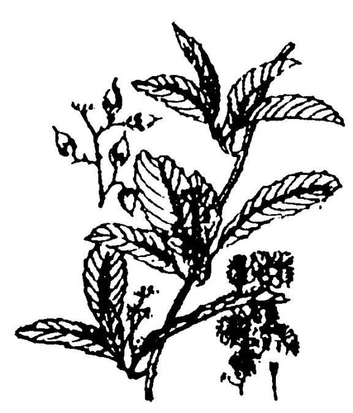
Còn gọi là dây dây chiều, u trặc trìu... là một loại dây leo nhỏ, thường dài từ 3 -5 mét. Thân có lông tơ, nhiều nhánh phụ. Lá dai, nhám hình bầu dục, mép có răng cưa. Hoa trắng, mọc thành chùy ở nách hay ở ngọn. Dây chiều mọc hoang ở rừng núi và đồng bằng. Người ta dùng thân của dây chiều để làm dây, rất dẽo và bền...
Dây mấu:
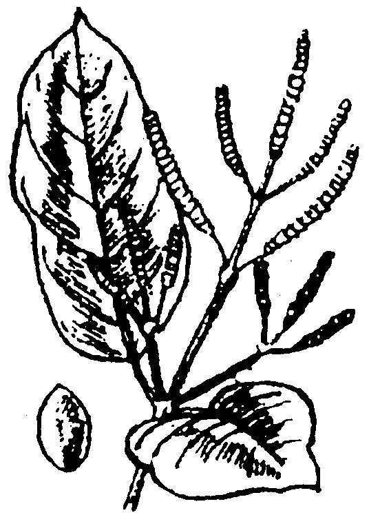
Còn gọi là dây sót, gắm gấm lót... Mọc hoang khắp các vùng rừng núi ở nước ta.
Là một loại dây mọc leo trên các thân cây to, dài hơn 10 mét. Thân cây rất nhiều mấu. Lá hình trứng, mọc đối. Hoa đực mọc thành chùm, phân nhánh một hoặc hai lần. Quả có phủ một lớp như sáp, ăn được... Đây là một loại dây leo to, có thể dùng để cột bè, làm cầu, dựng nhà, bó củi, kéo cây gỗ...
Dây choại (dây chạy):
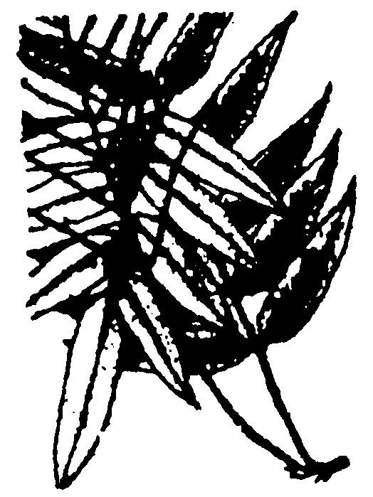
Là một loại dây leo, mọc bò trên các cây cao. Thân nhỏ, dài và rất bền chắc, có thể dùng để đan giỏ, bện đăng... Lá nhỏ, dài, hình mác, gân giữa nỗi rõ, hợp thành lá kép lông chim lớn
Thường mọc nơi ẩm ướt, có bóng mát, dọc theo các mương nước hoặc mọc phủ kín thân cây khác. Chồi non ăn được.
Dây xanh:
Là loại dây leo nhỏ, màu xanh toàn thân, thường bò dưới đất. Mọc ở những vùng rừng chồi thấp, rừng tái sinh, trảng trống, đất hoang... có thể dài từ 5 - 10 mét, ít phân nhánh. Lá hình mác, mọc đối... Loại dây này nếu cột ở những nơi không bị tác động của mưa nắng thì có thể chịu được 5-10 năm.
Ngoài ra, còn vô số dây rừng có thể sử dụng được ngay (mà chúng tôi không thể định danh được hay không có tiêu bản trong tay). Tuy nhiên, trước khi dùng, các bạn nên thử nghiệm độ bền chắc của nó
CÁC LOẠI DÂY CẦN CHẾ TÁC, XỬ LÝ
Các lại dây mà phải qua công đoạn chế tác, thì khá bền chắc và đa dụng. Tuy nhiên, vì phải làm thủ công, nên mất rất nhiều thời gian và công sức.
Có rất nhiều loại cây có thể dùng để xe hay bện thành dây, những cây sau đây là một số cây mà chúng ta thường gặp ở Việt Nam và một số nước trong vùng nhiệt đới
Cây da:
Là một loại dây leo ký sinh khổng lồ, bám vào một cây ký chủ và thòng rất nhiều rể phụ để tự đứng vững.
Người ta lột vỏ những rễ phụ của cây đa (dài khoảng 5-6 m) Sau khi đã cạo sạch lớp da ngoài, đem phơi nơi thoáng mát. Khi dùng thì xe hay bện lại, chúng ta sẽ có những sợi dây rất bền chắc, có thể làm dây cung hay ná mà không sợ đứt.
Cây gai:
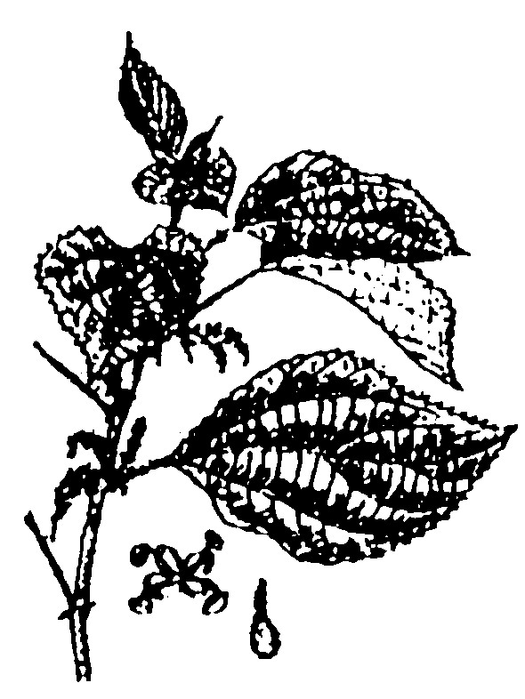
Là loại cây nhỏ (cở ngón tay, dạng roi). Cao từ 1 -2 mét. Lá lớn, mọc so le, hình tim, mép có răng cưa, mặt dưới có nhiều lông trắng, nhám...
Cây mọc hoang và được trồng khắp nơi trong nước. Lá dùng để làm bánh ít lá d gai. Sợi rất bền chắc, dùng để dệt, may vá, đan lưới.
Muốn có sợi, các bạn chặt những cây già, bỏ phần ngọn còn non; tước lấy vỏ, cạo sạch tinh của da, còn lại là những sơi nhỏ màu trắng, rất bền chắc, có thể sử dụng ngay
Dứa bà và Dứa dại:
Hai cây này tuy khác nhau hoàn toàn, nhưng công thức chế sợi lại giống nhau
Dứa bà:
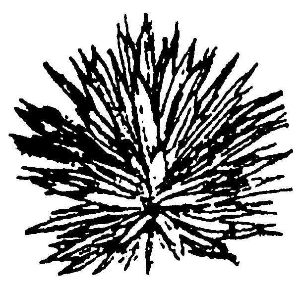
còn gọi là Thùa, dứa Mỹ, lưỡi lê... có nguồn gốc Châu Mỹ. Được trồng ở Việt Nam để làm cảnh, sau đó phát triển lan rộng và mọc hoang khắp nơi. Dứa bà có lá màu lam mộc, hình kiếm dài, dày, mọng nước, đầu lá có gai to, nhọn, cứng, gai mép lá có màu đen bóng như sừng
Dứa dại:
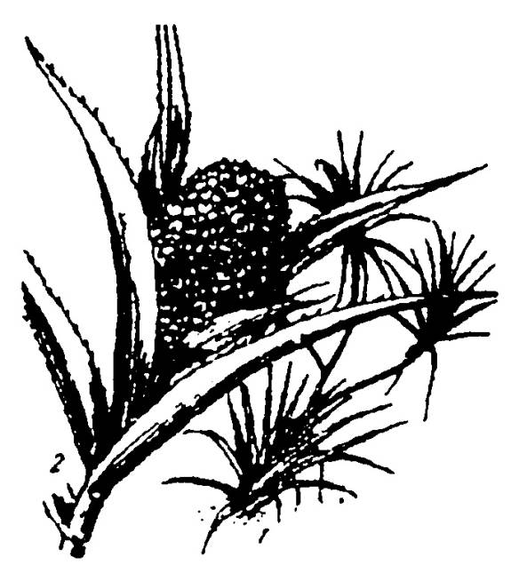
Là một cây nhỏ phân nhánh ở ngọn. Cao khoảng 3-4 mét. Lá mọc đầu nhánh thành chùm, hình bản dài 1-2 mét, gân giữa và mép có gai sắc. Quả là một khối hình trứng, với những quả hạch có góc cạnh, rất cứng
Cây mọc hoang khắp nơi, đôi khi được trồng để làm hàng rào
Muốn có sợi, chúng ta cắt lá bó lại thành từng bó, đem ngâm nước (nước mặn càng tốt), độ 10 ngày thì vớt lên. Dùng dao hay mảnh sành nạo bỏ phần mềm, còn lại là sợi, đem phơi khô, sẽ cho chúng ta những sợi khá chắc, có thể dùng để cột, đan võng, bện dây thừng
Cây dừa:
Như chúng tôi đã đề cặp tới trong chương “NƯỚC”. Dừa là loại cây rất phổ biến ở các nước và hải đảo vùng nhiệt đới, người ta tách xơ của vỏ quả dừa ra từng múi nhỏ, đập nát, gỡ ra từng sợi rồi xe bện lại, các bạn sẽ có một loại dây rất chắc chắn.
Ngoài ra, các bạn có thể dùng cây đay, cây yucca (ngọc giá) cây nettle (tầm ma)... để lấy sợi bện thành dây.
Các bạn cũng có thể dùng gân thú, da thú cắt thành từng sợi nhỏ dài, phơi khô. Hoặc dùng tơ tằm, xe lại thành sợi
LẠT
Được làm từ một số cây thuộc loại tre nữa như; tre, tre mỡ, lồ ô, nứa, giang, trúc, vầu... hoặc từ một số dây mây như, mây song (song bột, song đá, song cát), mây nước, mây rã...
Người ta dùng lạt trong các công việc như: lợp nhà, bó cây, bó củi, dựng nhà, cột vách... Nếu chẻ hơi dày, cũng có thể đan rổ rá và một số dụng cụ. Nếu chẻ to bản, có thể đan thành tấm phên, liếp... dùng để che chắn
Chẻ lạt:
Chẻ lạt là cả một nghệ thuật, khi các bạn chẻ lạt ngắn (20- 30 cm) thì khá dễ, nhưng nếu chẻ lạt dài mà không biết điều chỉnh lưỡi dao thì sẽ lải (sợi lạt đầu dày đầu mỏng) không sử dụng được
Chúng ta cắt thân tre, nứa hay mây... ra từng đoạn (dài ngắn tùy theo nhu cầu), rồi chẻ đôi dần dần (chẻ làm 2, rồi làm 4, làm 8, làm 16... ) cho đến khi có độ mỏng vừa ý. Khi chẻ, chú ý quan sát, nếu đường chẻ chia đều hai bên bằng nhau thì các bạn cứ đẩy lưỡi dao tới rồi lách lưỡi dao bên phải một cái, rồi bên trái một cái.
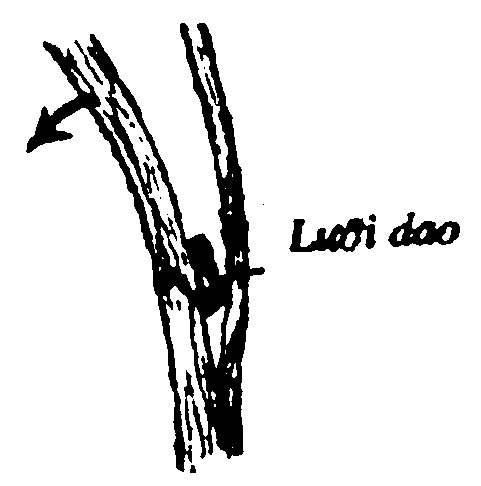
Nhưng nếu đường chẻ có chiều hướng nghiêng qua một bên, thì các bạn lách lưỡi dao về phía mỏng, đồng thời uốn cong phần dày theo chiều ngược lại, cho đến khi thấy đường chẻ trở lại ngay chính giữa thì thôi
XE DÂY
Khi cần có một sợi dây đủ dài hay đủ lớn để sử dụng, các bạn cần phải biết các xe bện, từ những sợi ngắn thành sợi dài, hoặc từ những sợi dài thành sợi lớn.
Xe những sợi ngắn thành sợi dài
Các bạn chập đôi sợi dây lại cho so le, rồi xe bằng tay hay bằng chân theo hình minh họa.
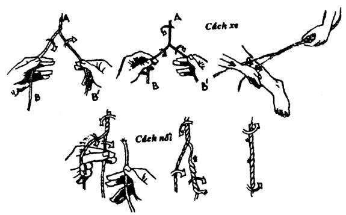
Cách xe: Giữ đầu A cho chặt, xe đầu B và B' cùng chiều cho thật săn rồi mới buông đầu A ra. Lặp lại động tác này nhiều lần cho đến khi hết dây thì chập thêm dây ở sợi nào hết trước, rồi xe tiếp cho đến khi vừa đủ.
Đây là phương pháp thủ công, làm rất lâu, các bạn cần kiên nhẫn.
Bện thành dây lớn
Nếu các bạn đã có vài sợi muốn bện lại thành một dây lớn thì phương pháp thủ công trên khó mà hoàn thành một. Các bạn cần phải làm một cái bàn quay hay một cái xa theo hình minh họa dưới đây:
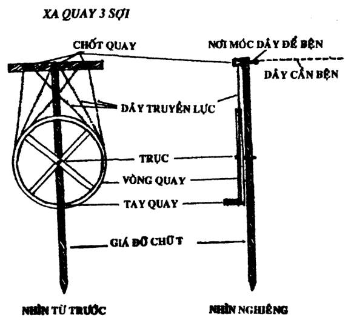
BỆN QUAY TAY TAM GIÁC
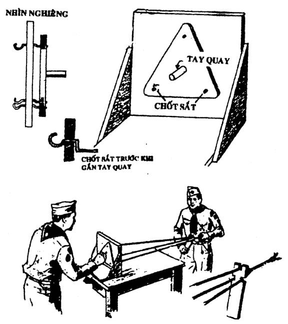
NÚT DÂY
Ở nơi hoang dã, dây là một vật dụng rất thiết yếu, vì thế các bạn cần phải biết một số núi dây cơ bản để đem áp dụng cụ, tóm lưỡi câu...
Có thể các bạn cho là không cần thiết, nhưng nếu buộc dây không đúng cách thì hao tốn dây mà không chắc chắn, đến khi cần tháo thì tháo không ra... Trong phần này, chúng tôi chỉ trình bày một số nút dây thật cần thiết mà thôi. (Muốn tìm hiểu thêm về NÚT DÂY, xin các bạn tìm đọc cuốn “CẨM NANG TỔNG HỢP VỀ KỶ NĂNG HOẠT ĐỘNG THANH THIẾU NIÊN” của Phạm Văn Nhân)
NÚT DẸP
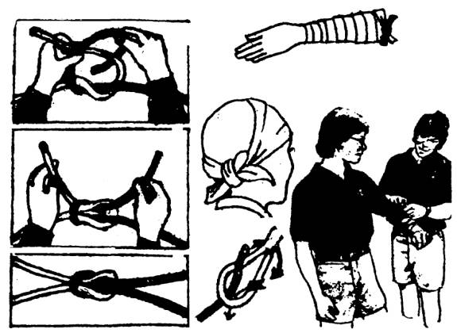
Dùng để nối hai đầu dây có tiết diện bằng nhau, cột gói hàng, khóa băng cứu thương
NÚT NỐI CÂU
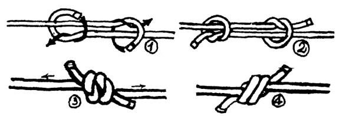
Dùng để nối hai đầu dây trơn láng, có tiết diện không bằng nhau hoặc bằng nhau
NÚT THÒNG LỌNG
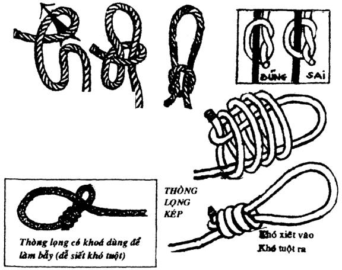
Dùng để buộc đầu dây vào một vật, có thể nới rộng hay thu hẹp tùy ý. Dùng để đánh bẫy. Để bắt súc vật...
NÚT THUYỀN CHÀI
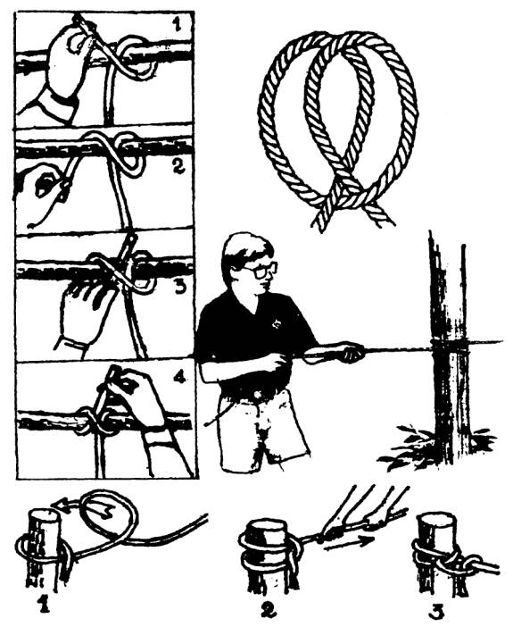
Dùng để cột một đầu dây vào một cọc. Dùng để cột thuyền. Để căng một sợi dây
NÚT GHẾ ĐƠN
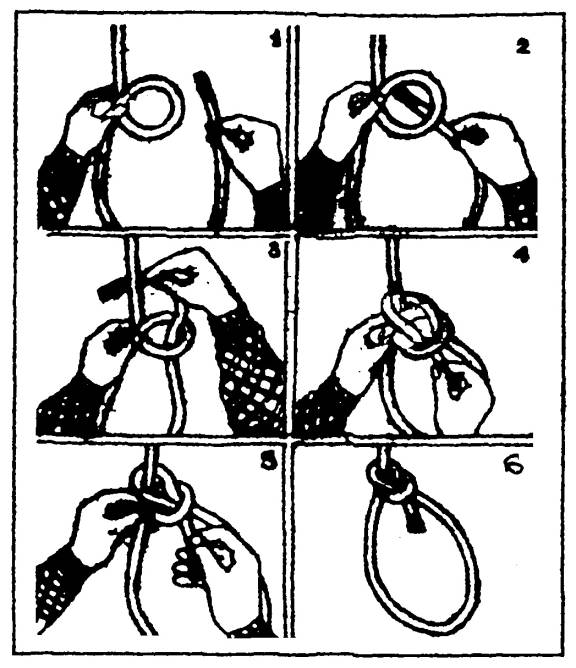
° Làm một vòng tròn cố định ở đầu một sợi dây
° Dùng đưa người từ dưới thấp lên.
° Ném cho người sắp chìm dưới nước để kéo họ vào
° Làm dây an toàn khi leo núi hay làm việc trên cao
° Kéo những nạn nhân trong hoả hoạn ra khỏi nơi nguy hiểm
Cách làm núi Ghế đơn bằng một tay
Trường hợp khi một tay phải giữ thăng bằng, chỉ còn một tay tự do, các bạn phải làm nút Ghế đơn vòng quanh bụng bằng một tay để những người khác kéo ta lên
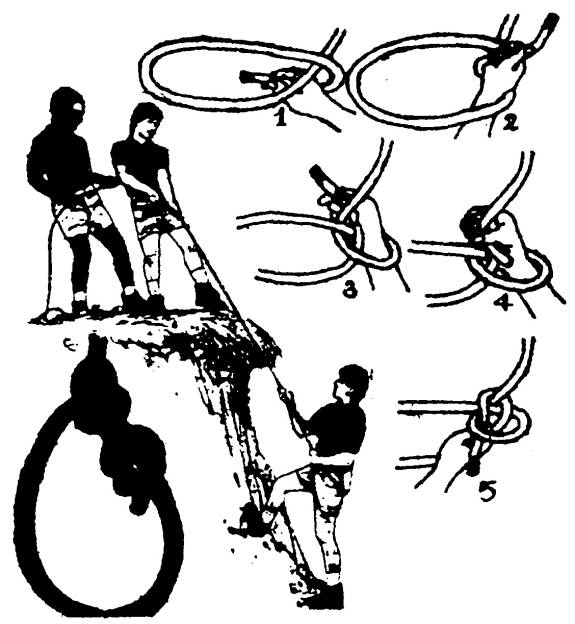
CÁC LOẠI NÚT TÓM LƯỠI CÂU
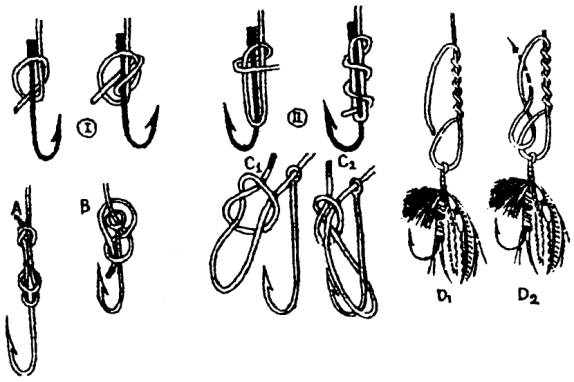
NÚT LẠT LỒNG
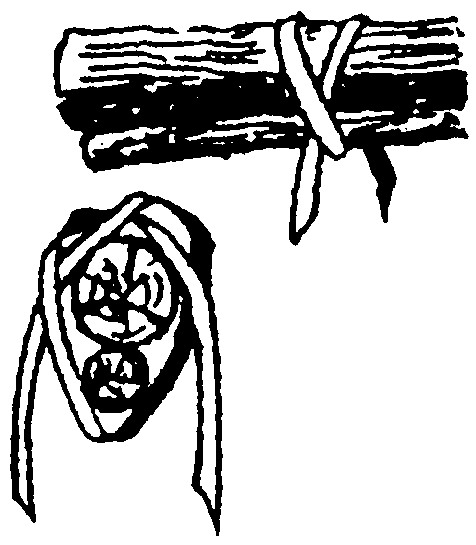
Ghép 2 cây lại với nhau bằng tre, mây, sống lá…
NÚT LẠT VẶN
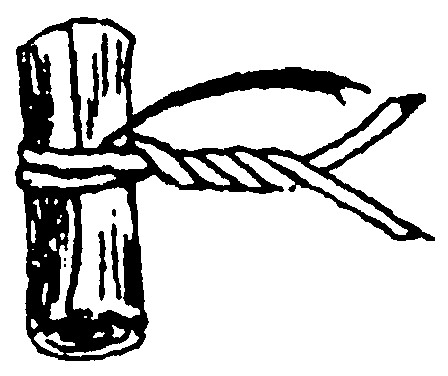
Khóa gài đầu dây lạt sau khi cột lại như gói bánh, lợp nhà…
NÚT ĐẦU RUỒI
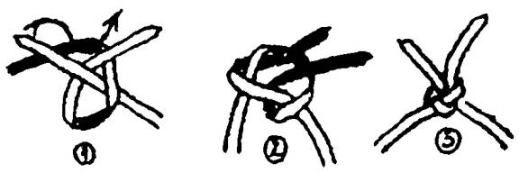
Nối 2 đầu lạt tre, mây, sống lá cứng…
NÚT NGẠNH TRÊ ĐƠN
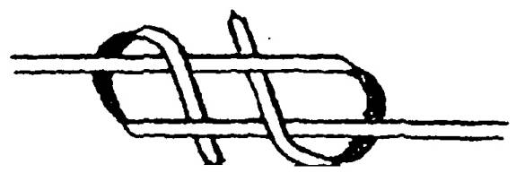
NÚT NGẠNH TRÊ KÉP
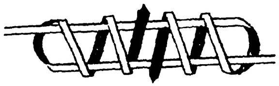
Dùng để nối 2 đầu lạt tre, mây, sống lá mềm…
NÚT KÉO GỖ
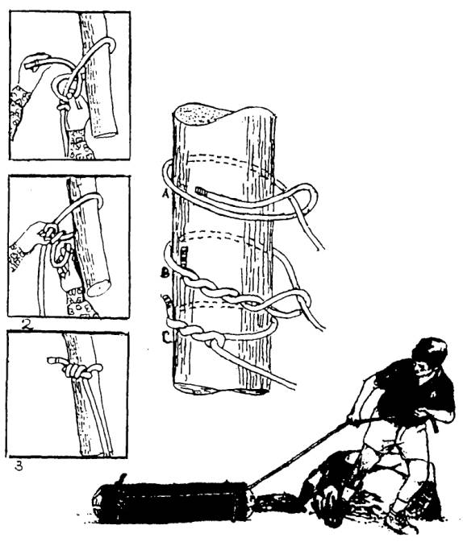
- Dùng để kéo vật dài và nặng. Dùng để căng võng
- Khởi đầu của nút tháp cây dấu nhân.
Nguyên tắc của các loại nút kéo gỗ là đầu dây, ghìm lúc nào cũng phải căng thẳng nếu không dây sẽ bị một và nên bẻ góc để dây được xiết cứng hơn
NÚT CARICK
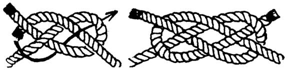
CÁC LOẠI NÚT THOÁT THÂN
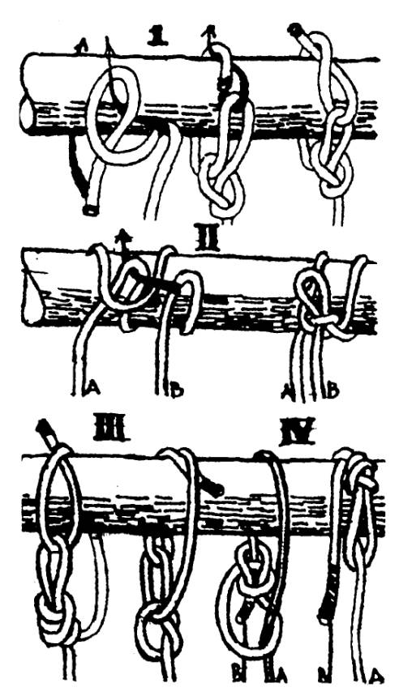
- Dùng thu hồi sợi dây mà chúng ta đã sử dụng để đu từ trên cao xuống
- Không để cho những người truy đuổi chúng ta theo đó mà xuống
Khi thu hồi dây các bạn nên lưu ý: Kiểu I và II sau khi đu xuống, các bạn cầm sợi dây giũ mạnh vài cái, dây sẽ tuột ra. Kiểu III và IV sau khi đu xuống bằng dây A, khi xuống đến nơi thì cầm dây B kéo mạnh để thu hồi sợi dây.
Ghi nhớ: Khi đu xuống các bạn cầm dây A. Nếu cầm nhầm qua dây B là nguy hiểm đến tính mạng, vì dây tuột ra và các bạn sẽ rơi tự do
CHÚ Ý: Các bạn có thể sử dụng NÚT KÉO GỖ để làm nút thoát thân, nhưng phải để đầu dây sống
CÁC NÚT THÁP CÂY
NÚT NÍN NỐI
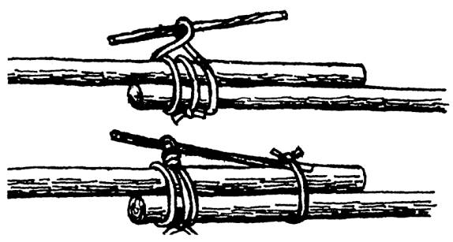
dùng để nối hai cây cột hay hai cây sào dài bằng các loại dây
NÚT NÍN THÁP NGANG
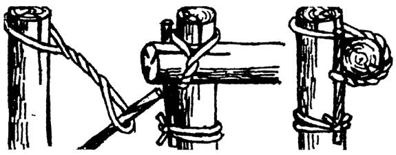
Dùng để tháp hình chữ thập hai cây gỗ tre... bằng lạt, mây, hay dây rừng
NÚT THÁP THẲNG
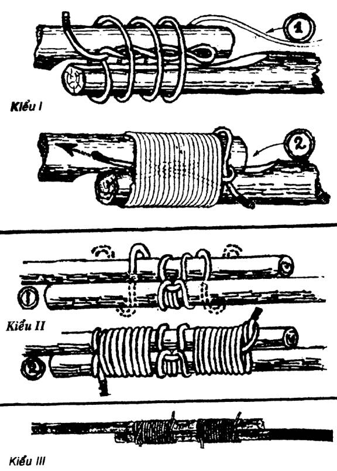
NÚT THÁP CHỮ THẬP
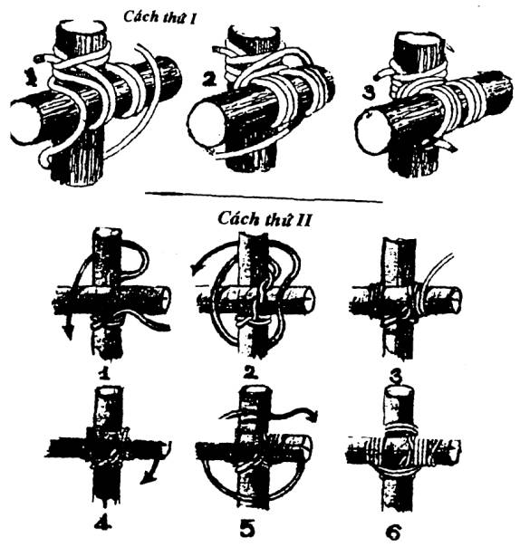
Công dụng; Dùng để tháp ngang hai cây gỗ lớn vào với nhau trong công tác làm cầu, làm nhà, thủ công trại... (nhớ là khởi đầu và kết thúc bằng nút Thuyền chài)
NÚT THÁP CHÉO CHỮ X
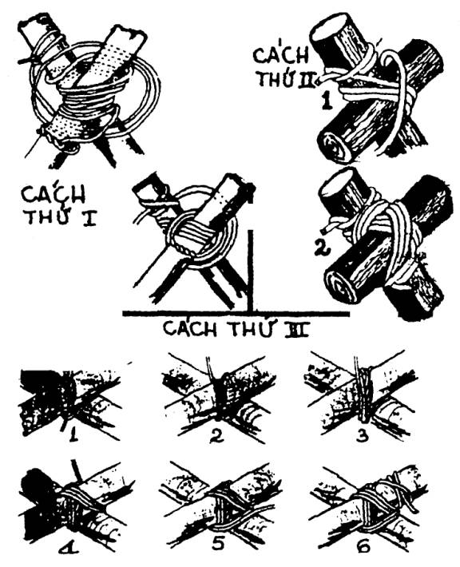
Dùng trong việc dựng nhà, là cầu, thủ công tiện nghi…
GHÉP SONG SONG & GHÉP BA
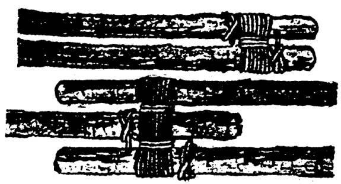
Công dụng: Tăng cường sức chịu lực của cây, dùng để nối dài, tháp cao... dựng nhà, dựng cầu, dựng cột cờ...
GHÉP CHỤM BA
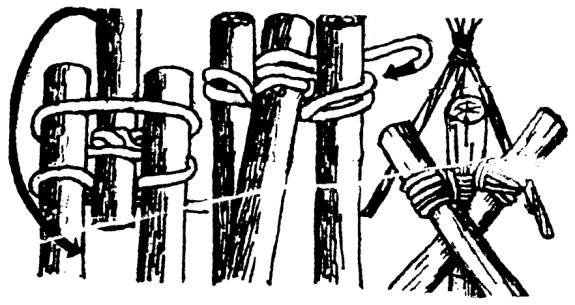
Công dụng: Chụm đầu ba cây lại thành một hình tháp
NÚT CHẦU (TẾT) ĐẦU DÂY
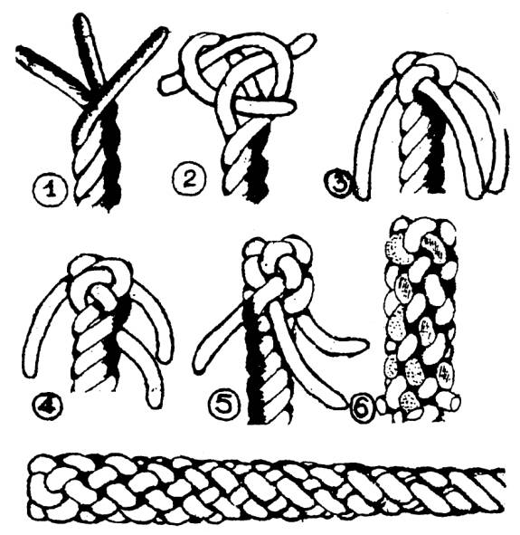
Công dụng: Bện dây thừng lại cho khỏi bị bung ra
Lưu ý: Nên làm trên một mặt phẳng, sau khi làm xong để dây được đều đặn
NÚT CHẦU NỐI
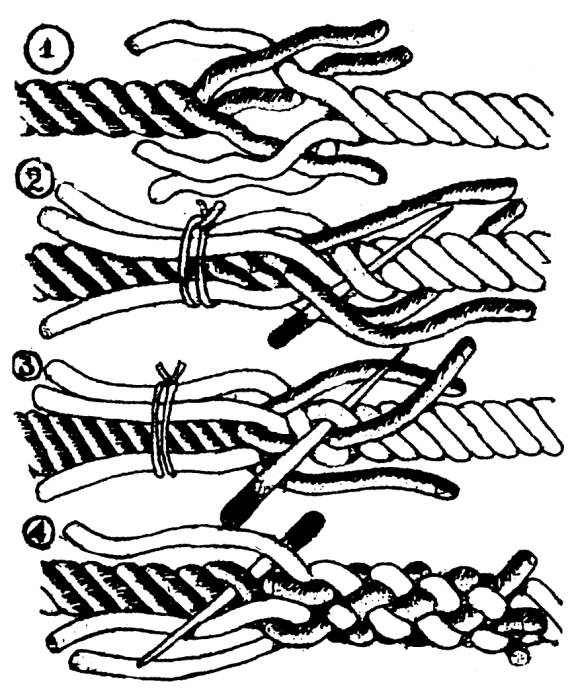
Dùng để nối hai đầu dây mà không có nút gồ lên làm vướng